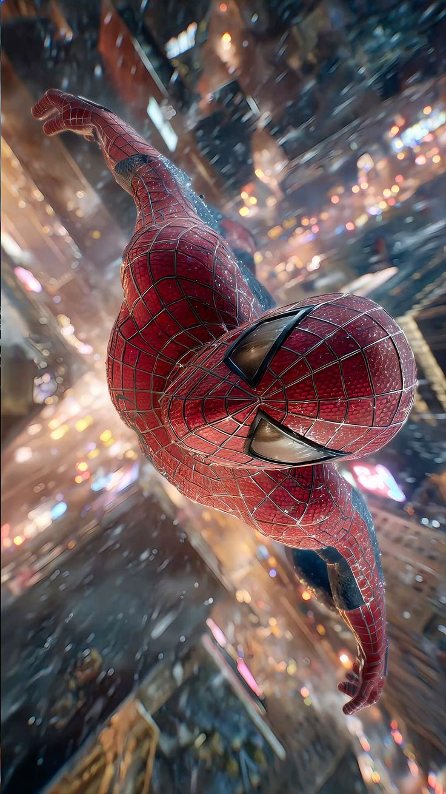
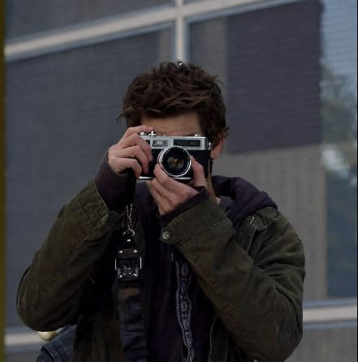
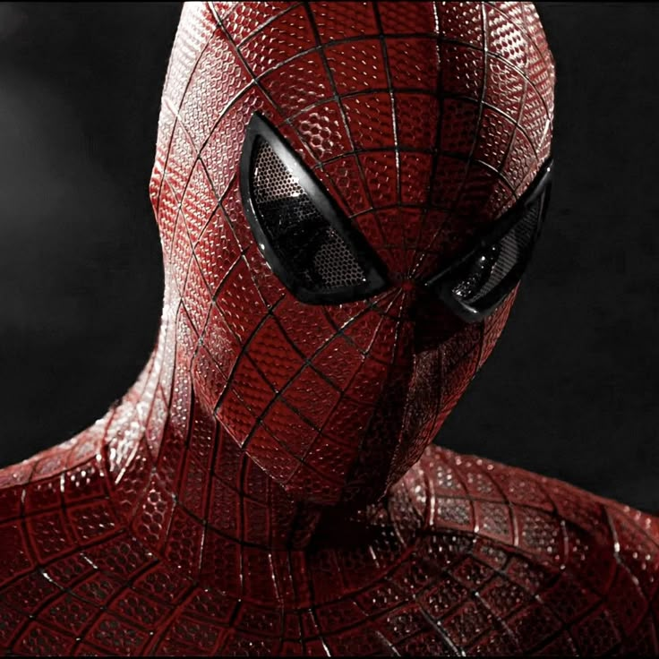

Ingenio e Inventiva
A diferencia de otras sagas cinematográficas, crea sus propios disparadores mecánicos de muñeca y cartuchos a presión aprovechando el bio-cable de Oscorp.

El Peter Parker de Andrew Garfield: un genio solitario, skater y fotógrafo que transformó la tragedia en el valor para proteger la ciudad.
Explorar al PersonajeLos aspectos clave que definen su inicio como héroe.

Un estudiante brillante y solitario de Midtown Science, hábil en biofísica y aficionado a la fotografía y al skate, marcado por la misteriosa ausencia de sus padres.
A diferencia de otras sagas cinematográficas, crea sus propios disparadores mecánicos de muñeca y cartuchos a presión aprovechando el bio-cable de Oscorp.
La fórmula de decaimiento del algoritmo cero dejada por su padre conecta directamente con el suero genético que transforma al Dr. Curt Connors en el Lagarto.
Detalles físicos y visuales que lo distinguen en pantalla.

Tras un primer traje deportivo experimental, adoptó en su segunda película el diseño con los característicos ojos blancos grandes, considerado uno de los más fieles al cómic.
Andrew Garfield analizó los movimientos y la biomecánica de arañas reales, adoptando posiciones agachadas, giros rápidos y ataques con reflejos animales.
Las tomas de balanceo transmiten la inercia, la velocidad terminal y el esfuerzo muscular con la ropa ondeando al cortar el viento a gran altitud.
Anécdotas del actor y datos de producción durante las filmaciones.
Andrew Garfield confesó que a los 3 años usó un traje de Spider-Man para una fiesta, por lo que interpretar al personaje fue la meta cumplida de toda su vida.
Entrenó gimnasia olímpica y parkour intensivo para ejecutar directamente la mayor cantidad de balanceos en cables suspendidos sobre calles reales de Manhattan.
El sentido del humor burlón que exhibe frente a delincuentes y villanos incluyó diálogos improvisados en el momento por el actor para plasmar la chispa de Peter Parker.